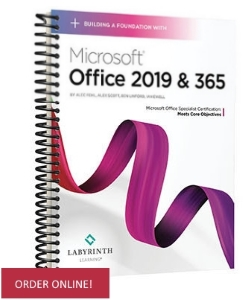

Microsoft Access 2019: ComprehensiveThis in-depth courseware will equip students with a thorough knowledge and understanding of the most relevant features and uses of Microsoft Access. Students will be engaged with hands on learning as they apply learned concepts to create tables, work with forms, query databases, and more! |
|
Building a Foundation with Microsoft Office 2019This in-depth courseware equips learners with knowledge and skills in the four most common applications in the Microsoft Office productivity suite: Word, Excel, PowerPoint and Access. Completely updated to align with the way today's students learn, live and think. |
 |